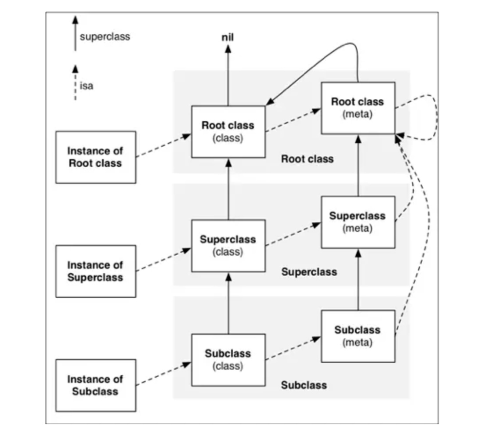

探寻 OC 对象的本质
面试题：一个 NSObject 对象占用多少内存？
我们平时编写的代码都是 Objective-C 的代码，但是底层实现其实都是 C/C++的代码
#import <Foundation/Foundation.h>
#import <malloc/malloc.h>
#import <objc/runtime.h>
int main(int argc, const char * argv[]) {
@autoreleasepool {
NSObject *obj = [[NSObject alloc] init];
// 创建一个实例对象，实际上分配多少内存 - 16
NSLog(@"%zd", malloc_size((__bridge const void *)obj));
// 创建一个实例对象，至少需要多少内存 - 8
NSLog(@"%zd", class_getInstanceSize([NSObject class]));
}
return 0;
}
- 系统分配了 16 个字节给 NSObject 对象（通过 malloc——size 函数获得）
OC 源码显示分配给对象的内存为 16 个字节的整数倍，至少是 16 个字节

OC的对象、类主要是基于C\C++的什么数据结构实现的呢？
结构体
OC 的对象是基于 C 的结构体实现的
这个结构体只有一个成员：isa 指针，而指针在 64 位架构中占 8 个字节。
那么这个结构体占多大的内存空间呢，我们发现这个结构体只有一个成员，isa指针，而指针在64位架构中占8个字节。也就是说一个NSObjec对象所占用的内存是8个字节。到这里我们已经可以基本解答第一个问题。但是我们发现NSObject对象中还有很多方法，那这些方法不占用内存空间吗？其实类的方法等也占用内存空间，但是这些方法所占用的存储空间并不在NSObject对象中。
实例对象 类（对象） 元类

- instance的isa指向class
- class的isa指向meta-class
- meta-class的isa指向基类的meta-class，基类的isa指向自己
- class的superclass指向父类的class，如果没有父类，superclass指针为nil
- meta-class的superclass指向父类的meta-class，基类的meta-class的superclass指向基类的class
- instance调用对象方法的轨迹，isa找到class，方法不存在，就通过superclass找父类
- class调用类方法的轨迹，isa找meta-class，方法不存在，就通过superclass找父类
为什么会存在元类？
元类是一个类对象的类
简而言之：
当你向一个对象发送一条消息的时候，运行时会在对象的类的方法列表中查找这条消息是否存在。
当你向一个类发送一条消息的时候，运行时会在类的元类的方法列表中查找这条消息是否存在。
元类的存在是必需的，因为他存储了一个类的所有类方法。每个类的元类都是独一无二的，因为每个类都有一系列独特的类方法。
什么是元类的类
元类，和类一样，也是一个对象。这表示你能够对元类调用方法。自然的，这表示他必须也有一个类指针。
所有元类使用基类的元类（即继承链顶端的类的元类）作为他们的类，而所有类的基类都是 NSObject（大多数类是这样的），所以大多数元类使用 NSObject 的元类作为他的类。
根据规则所有元类使用基类的元类作为他们的类，那么基类的元类就是他自己的类（他们的isa指针指向了自己）。这表明NSObject的元类的指针指向的是他自己（他是一个他自己的实例）。
继承类和元类
同样的，类使用 super_class 指针指向他们的 superclass，元类也有 super_class 指针来指向 superclass。
这里又有一个奇怪的地方，基类的元类设置的 superclass 是基类自己。
这种继承结构导致的结果是所有结构中的实例、类以及元类都继承自结构中的基类。
所有实例、类和元类都在 NSObject 的层级下，这表明所有 NSObject 的实例方法都能够被使用，同样的，对类以及元类来说，所有 NSObject 的类方法也是有效的。
元类总结：
元类是一个类对象的类。每一个类有他自己独一无二的元类（因为每个类能够有自己独一无二的方法列表）。这就意味着类对象的类并不是和他们一样的类。
元类能确保类对象有所有底层类的实例和类方法，中间加上所有自己的类方法。所有类继承自NSObject，这意味着NSObject所有的实例和协议方法为所有类（和元类）对象都定义了。
所有元类使用基类的元类（NSObject 元类）来作为他们的类，包括只在运行时自定义的类的元类。
参考：
https://juejin.im/post/5ac81c75518825556534c0af
https://www.jianshu.com/p/79b06fabb459